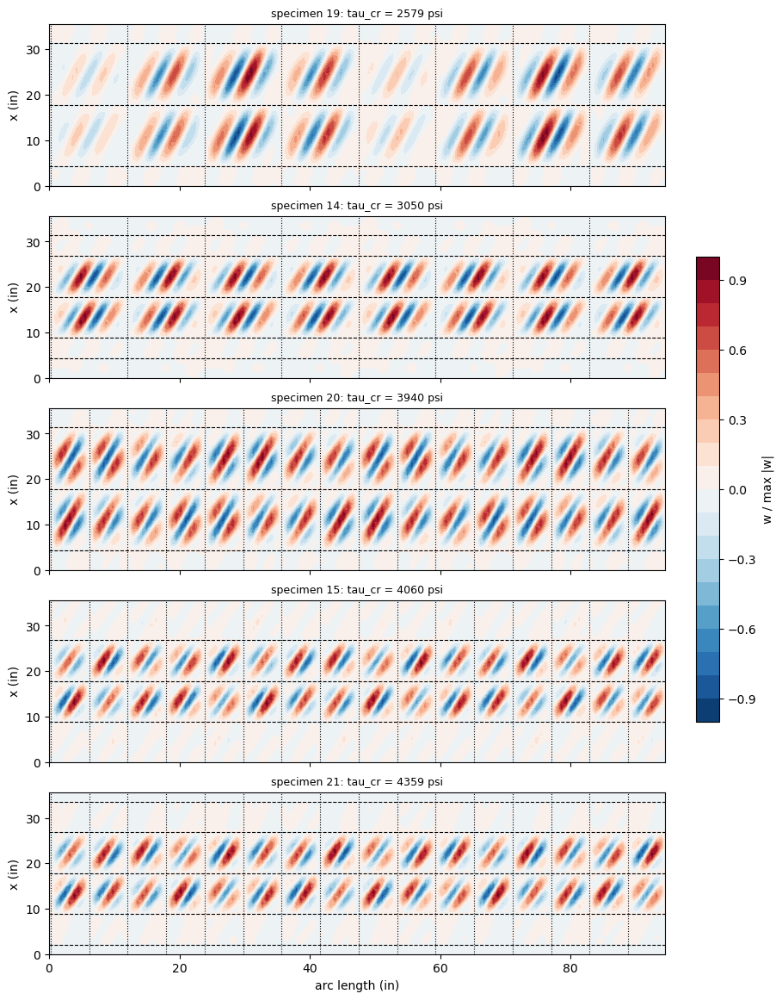

Torsional buckling of ring- and stringer-stiffened cylinders: Moore and Wescoat (1944), Table II#
Moore and Wescoat [1] tested in torsion five 24S-T cylinders of mean diameter \(D = 30.08\) in, stiffened by \(1/2 \times 1/2\) in solid rings inside the skin and by 8 or 16 channel stringers outside it (specimens 19, 14, 20, 15 and 21). Their Table II (p. 26) gives, for each size of panel, the mean observed shear-buckling stress and the values computed with four theories; the panels buckled one size after the other, the first buckling of each specimen being the panel of lowest stress.
This notebook computes the first buckling stress of the perfect cylinders with panels.multidomain.MultiDomain. The rings are modelled as in the notebook moore1944_ring_cylinders (annular webs on the inner surface of the skin); each stringer is a strip of the skin with the base of the channel as a second layer, two webs and two lips, flat plates. The same cases are modelled with BFSC finite elements in the notebook moore1944_stiffened_cylinders of the bfsccylinder package; its values
are compared in Section 5.
Lengths in in, forces in lbf, stresses in psi, torques in ft-lb as in [1].
[1]:
import json
import numpy as np
import matplotlib.pyplot as plt
import panels
import moore1944_utils as mu
from moore1944_utils import print_table, rel
%matplotlib inline
print('panels', panels.__version__)
SPECS = ['19', '14', '20', '15', '21']
panels 0.15.0
1. Data#
From [1] (“p.” is the printed page, the PDF page is two more); the material, the diameter, the bulkheads and the rings are those of the notebook moore1944_ring_cylinders.
quantity |
value |
source |
|---|---|---|
sheet thickness |
0.020 in (19, 14, 20), 0.0195 in (15), 0.0205 in (21) |
Table II, Fig. 11 |
stringers |
8 (11.81 in apart) or 16 (5.90 in apart), equally spaced, one on the seam |
Table II, Fig. 1 |
stringer section |
channel of 0.032 in 24S-T sheet, base 1/2 in wide on the skin, depth 0.64 in, overall width 1.12 in with the curled lips, bend radius 1/8 in; \(A = 0.072\) in², \(I_{XX} = 0.00375\) in⁴, \(I_{YY} = 0.0063\) in⁴ |
Fig. 1, Fig. 30 |
attachment |
one row of 1/8 in A17S-T rivets through the base |
Fig. 1 (pitch not legible) |
ring stations |
Fig. 11, from the centres of the end bulkheads, 35 5/8 in apart |
Fig. 11 |
first buckling: panel and stress |
Table II, lowest stress of each specimen |
|
stress and torque |
\(\tau = 0.422\,T\) (\(t = 0.020\) in), \(0.433\,T\) (0.0195 in), \(0.412\,T\) (0.0205 in); \(T = \tau \pi D^2 t/24\) |
Fig. 11, note 2; p. 7 |
The computed columns of Table II are, for the same panels: ANC-5 [2], Kromm [3], Ebner [4] and Donnell [5], the last one “for cylinders having lengths equal to ring-stiffener spacings but without longitudinals”. For specimen 15, Table II prints the Kromm and Ebner values (2880 and 3170 psi) only on the line of the 9.00 in panels, which buckled after the 8.81 in end panels (Table III gives the same ratios on that line); they are not used for the first buckling.
[2]:
rows = []
for s in SPECS:
d = mu.SPECIMENS[s]
rows.append([s, d['t'], d['nstr'], ' | '.join('%g' % b for b in d['bays']), d['panel'],
d['obs']] + ['-' if c is None else c for c in d['computed']])
print_table(rows, ['spec', 't (in)', 'stringers', 'bays (in)', 'first panel (in)',
'observed (psi)', 'ANC-5', 'Kromm', 'Ebner', 'Donnell'])
spec t (in) stringers bays (in) first panel (in) observed (psi) ANC-5 Kromm Ebner Donnell
---- ------ --------- ------------------------------------- ---------------- -------------- ----- ----- ----- -------
19 0.02 8 4.3125 | 13.5 | 13.5 | 4.3125 13.50 x 11.81 2110 1620 1810 2320 2210
14 0.02 8 4.3125 | 4.5 | 9 | 9 | 4.5 | 4.3125 9.00 x 11.81 2950 1750 2700 2960 2770
20 0.02 16 4.3125 | 13.5 | 13.5 | 4.3125 13.50 x 5.90 2870 2070 2600 2570 2210
15 0.0195 16 8.8125 | 9 | 9 | 8.8125 8.81 x 5.90 3370 2110 - - 2680
21 0.0205 16 2.0625 | 6.75 | 9 | 9 | 6.75 | 2.0625 9.00 x 5.90 4120 2240 - - 2910
2. The model#
Skin and rings as in moore1944_ring_cylinders: curved domains cylshell_clpt_sanders, one bay per ring spacing along the axis, rings as webs of annular_clpt_donnell domains of \(1/2 \times
1/2\) in connected to the inner surface of the skin with 'BFxcte' and face='lower'; ends \(u = v =
w = 0\) with \(w_{,x}\) free (hinged). Along the circumference each stringer pitch is split into the strip under the base of the stringer and the bay between two stringers.
Stringers. The channel is assembled from flat strips, as the Z stringers of panels.multidomain.create_cylinder_z_stiffened (not used here, since the channel has two webs):
the base is a second layer, 0.032 in thick, of the laminate of the strip under it, on the outer face of the skin; the laminate has the offset \(+t_z/2\) so that the reference surface of the strip remains the middle surface of the skin, shared with the bays (continuous bond; the rivet line of [1] is not represented, its pitch being a later sensitivity);
each web is a flat plate
plate_clpt_donnellstanding outside on an edge of the strip, connected with'BFycte'at the reference surface of the strip, from the middle surface of the skin to the middle plane of the lip, \(H_w = t/2 + 0.64 - t_z/2\);each lip is a flat plate connected to the free edge of its web with
'BFycte'and bent away from the channel; the curls of [1] are not represented.
The strip spans the middle planes of the two webs, \(b_s = 1/2 - t_z\) (the 1/2 in of Fig. 1 is read as the outer width of the base). The developed length of the curled lips is not given, and the lip width \(b_l\) is chosen so that the five plates have the area of the section measured by weighing, \(A = 0.072\) in² ([1] p. 8, Fig. 30). The webs and lips are split at the ring stations as the skin, and are held by the bulkheads at the ends as the skin.
Load. The constant shear flow \(N_{xy} = 1\) lbf/in is given to the skin and to the strips; the rings and the plates of the stringers carry no stress in the membrane state of a perfect cylinder in torsion. The critical shear flow is the lowest load multiplier of the linear buckling problem reduced with the null space of the connections, as in moore1944_ring_cylinders, and \(\tau_{cr} =
\lambda/t\) with \(t\) the skin thickness.
[3]:
sec = mu.stringer_section(0.020)
rows = [['A (in^2)', '%.4f' % sec['A'], 0.072, '%+.1f' % rel(sec['A'], 0.072)],
['I_XX (in^4), axis parallel to the skin', '%.5f' % sec['Ixx'], 0.00375,
'%+.1f' % rel(sec['Ixx'], 0.00375)],
['I_YY (in^4), axis normal to the skin', '%.5f' % sec['Iyy'], 0.0063,
'%+.1f' % rel(sec['Iyy'], 0.0063)]]
print('strip b_s = %.3f in, web H_w = %.3f in, lip b_l = %.3f in'
% (sec['bs'], sec['Hw'], sec['bl']))
print_table(rows, ['section without the skin', 'model', 'Fig. 30 [1]', 'diff %'])
strip b_s = 0.468 in, web H_w = 0.634 in, lip b_l = 0.257 in
section without the skin model Fig. 30 [1] diff %
-------------------------------------- ------- ----------- ------
A (in^2) 0.0714 0.072 -0.9
I_XX (in^4), axis parallel to the skin 0.00420 0.00375 +12.1
I_YY (in^4), axis normal to the skin 0.00472 0.0063 -25.2
The flat lips give an \(I_{XX}\) 12 % above and an \(I_{YY}\) 25 % below the values of Fig. 30, which were measured in bending tests ([1] p. 8): the curls, not represented, put part of the lips back towards the base and out to the overall width of 1.12 in. The stringers are not loaded before buckling, so their inertias enter only through the support they give to the skin.
Runs. The analyses are run on a cluster node by moore1944_runs.py (stage 2), which writes results/moore1944_stage2.json. Meshes (terms per inch, at least 6 along the axis per bay and 8 across a bay, at most 30):
mesh |
across a bay between stringers |
along the axis |
across strip, web, lip |
|---|---|---|---|
A |
1.5 |
0.8 |
4, 6, 4 |
B |
2.0 |
1.0 |
4, 6, 4 |
C |
2.5 |
1.2 |
5, 8, 5 |
[4]:
with open('results/moore1944_stage2.json') as f:
RES = json.load(f)
errors = [r for r in RES if 'error' in r]
print('%d cases, %d errors' % (len(RES), len(errors)))
for r in errors:
print(r['case'], r['spec'], r['error'])
res = {(r['case'], r['spec']): r for r in RES if 'error' not in r}
45 cases, 0 errors
3. Convergence#
[5]:
rows = []
for s in SPECS:
prev = None
for mesh in 'ABC':
r = res.get(('mesh ' + mesh, s))
if r is None:
rows.append([s, mesh, '', '', 'not run', '', '', ''])
continue
ch = '' if prev is None else '%+.2f' % rel(r['tau'], prev)
rows.append([s, mesh, r['domains'], r['size_r'], '%.1f' % r['tau'], ch, r['waves'],
'%.0f' % r['seconds']])
prev = r['tau']
print_table(rows, ['spec', 'mesh', 'domains', 'independent constants', 'tau_cr (psi)',
'change %', 'n', 's'])
spec mesh domains independent constants tau_cr (psi) change % n s
---- ---- ------- --------------------- ------------ -------- -- ----
19 A 240 30288 2581.4 17 559
19 B 240 42240 2579.5 -0.07 17 883
19 C 240 59520 2579.3 -0.01 17 1513
14 A 368 35440 3135.2 20 172
14 B 368 47056 3054.4 -2.58 20 489
14 C 368 65488 3049.7 -0.16 20 793
20 A 480 41568 4336.8 17 1136
20 B 480 55680 3944.0 -9.06 18 623
20 C 480 82752 3940.0 -0.10 18 1147
15 A 480 34656 4708.8 17 110
15 B 480 50496 4071.8 -13.53 19 485
15 C 480 82752 4060.3 -0.28 19 923
21 A 736 47264 5016.1 16 193
21 B 736 62912 4370.7 -12.87 19 2833
21 C 736 95968 4359.3 -0.26 19 2559
4. Sensitivity#
Mesh B, one change at a time: clamped ends; \(u\) free at the loaded end \(x = L\) (\(u = 0\) at \(x = 0\)); rigid ring supports; the Donnell kinematics in the skin; no stringers (the ring-stiffened cylinder, 16 sectors of 14 terms); lips 0.31 in wide from the outer face of the web (the geometric width \((1.12 - 0.5)/2\) of Fig. 30, area 0.0756 in²).
[6]:
SENS = ['clamped', 'u free', 'rigid rings', 'Donnell skin', 'no stringers', 'lips 0.31 in']
rows = []
for s in SPECS:
base = res[('mesh B', s)]['tau']
row = [s, '%.1f' % base]
for name in SENS:
r = res.get((name, s))
row += ['%.1f (%+.1f %%)' % (r['tau'], rel(r['tau'], base)) if r else 'n/a']
rows.append(row)
print_table(rows, ['spec', 'mesh B'] + SENS)
spec mesh B clamped u free rigid rings Donnell skin no stringers lips 0.31 in
---- ------ --------------- --------------- --------------- --------------- ---------------- ---------------
19 2579.5 2579.5 (+0.0 %) 2579.4 (-0.0 %) 2555.0 (-0.9 %) 2579.8 (+0.0 %) 2207.4 (-14.4 %) 2579.8 (+0.0 %)
14 3054.4 3054.4 (+0.0 %) 3054.4 (-0.0 %) 3003.2 (-1.7 %) 3054.5 (+0.0 %) 2744.0 (-10.2 %) 3054.6 (+0.0 %)
20 3944.0 3944.0 (+0.0 %) 3943.9 (-0.0 %) 3934.6 (-0.2 %) 3942.6 (-0.0 %) 2207.4 (-44.0 %) 3946.8 (+0.1 %)
15 4071.8 4071.9 (+0.0 %) 4038.7 (-0.8 %) 4044.7 (-0.7 %) 4070.7 (-0.0 %) 2650.4 (-34.9 %) 4072.6 (+0.0 %)
21 4370.7 4370.7 (+0.0 %) 4370.7 (-0.0 %) 4343.5 (-0.6 %) 4369.6 (-0.0 %) 2827.6 (-35.3 %) 4371.6 (+0.0 %)
5. Comparison with Table II and with bfsccylinder#
\(\tau_{FE}\) is the first buckling stress of the perfect cylinder, finest mesh, hinged ends. The bfsccylinder values are those of the notebook moore1944_stiffened_cylinders of that package (BFSC cylinder elements of Sanders-type kinematics, the channel of BFSC plates on a two-layer strip, lips 0.283 in, rings as bands of skin elements with the laminate skin + bar, one stringer pitch with Bloch conditions): 2619, 3134, 3970, 4118 and 4422 psi for specimens 19, 14, 20, 15 and 21.
[7]:
BFSC = {'19': 2619, '14': 3134, '20': 3970, '15': 4118, '21': 4422}
rows = []
for s in SPECS:
d = mu.SPECIMENS[s]
r = res.get(('mesh C', s)) or res.get(('mesh B', s))
comp = ['-' if c is None else '%+.0f' % rel(r['tau'], c) for c in d['computed']]
rows.append([s, d['panel'], r['kwargs'].get('n_per_in'), r['waves'], '%.0f' % r['tau'],
'%.0f' % r['T'], d['obs'], '%.0f' % mu.torque_ftlb(d['obs'], d['t']),
'%+.1f' % rel(r['tau'], d['obs'])] + comp
+ [BFSC[s], '%+.1f' % rel(r['tau'], BFSC[s])])
print_table(rows, ['spec', 'first panel', 'n/in', 'n', 'tau_FE (psi)', 'T_FE (ft-lb)',
'observed (psi)', 'observed (ft-lb)', 'FE vs obs %', 'vs ANC-5 %',
'vs Kromm %', 'vs Ebner %', 'vs Donnell %', 'bfsccylinder',
'panels vs bfsc %'])
spec first panel n/in n tau_FE (psi) T_FE (ft-lb) observed (psi) observed (ft-lb) FE vs obs % vs ANC-5 % vs Kromm % vs Ebner % vs Donnell % bfsccylinder panels vs bfsc %
---- ------------- ---- -- ------------ ------------ -------------- ---------------- ----------- ---------- ---------- ---------- ------------ ------------ ----------------
19 13.50 x 11.81 2.5 17 2579 6110 2110 4998 +22.2 +59 +43 +11 +17 2619 -1.5
14 9.00 x 11.81 2.5 20 3050 7224 2950 6988 +3.4 +74 +13 +3 +10 3134 -2.7
20 13.50 x 5.90 2.5 18 3940 9333 2870 6798 +37.3 +90 +52 +53 +78 3970 -0.8
15 8.81 x 5.90 2.5 19 4060 9378 3370 7783 +20.5 +92 - - +52 4118 -1.4
21 9.00 x 5.90 2.5 19 4359 10584 4120 10003 +5.8 +95 - - +50 4422 -1.4
6. Buckling modes#
Radial displacement \(w\) of the first mode on the unrolled skin (finest mesh, arbitrary scale); dashed lines: rings; dotted lines: stringers.
[8]:
fig, axes = plt.subplots(len(SPECS), 1, figsize=(9, 2.3*len(SPECS)), sharex=True,
constrained_layout=True)
for ax, s in zip(axes, SPECS):
r = res.get(('mesh C', s)) or res.get(('mesh B', s))
mode = r.get('mode')
if mode is None:
continue
wmax = max(np.abs(np.array(W)).max() for W in mode['W'])
for X, S, W in zip(mode['X'], mode['S'], mode['W']):
cs = ax.contourf(np.array(S), np.array(X), np.array(W)/wmax,
levels=np.linspace(-1, 1, 21), cmap='RdBu_r')
x = 0.
for b in mu.SPECIMENS[s]['bays'][:-1]:
x += b
ax.axhline(x, color='k', ls='--', lw=0.8)
ns = mu.SPECIMENS[s]['nstr']
for k in range(ns):
ax.axvline(k*2*np.pi*mu.R/ns + 0.234, color='k', ls=':', lw=0.8)
ax.set_ylabel('x (in)')
ax.set_title('specimen %s: tau_cr = %.0f psi' % (s, r['tau']), fontsize=9)
axes[-1].set_xlabel('arc length (in)')
fig.colorbar(cs, ax=axes, shrink=0.5, label='w / max |w|')
plt.show()

7. Discussion#
Convergence. The last refinement changes \(\tau_{cr}\) by 0.3 % or less (Section 3). The 16-stringer cylinders need about two terms per inch across the 5.4 in bays: mesh A, with 8 terms, is 10 to 16 % high for them.
Effect of the stringers. Without stringers (Section 4) the model gives 2207 psi for specimens 19 and 20 (the rings of specimen 18), 2744 psi for 14 (those of 13A), 2650 and 2828 psi for 15 and 21; these are within 0.1 to 2.8 % of Donnell’s column of Table II, computed by Moore and Wescoat for an unstiffened cylinder of the bay length. The 8 stringers raise the first buckling stress by 11 to 17 %, the 16 stringers by 53 to 79 %.
Computed columns of Table II. For the 8-stringer specimens Ebner’s values are the nearest to the model (11 % and 3 % below it); for the 16-stringer specimens the model is about 50 to 95 % above every column. Those formulas are for a curved panel between the stiffeners with assumed edge conditions ([1] appendix, pp. 21-23); the model represents the stringers and the rings with their stiffnesses.
Test values. The observed first buckling stresses are 3.4 % (14) to 37 % (20) below those of the perfect cylinders. For the specimens other than 14 they come from one test (Fig. 11, note 1); [1] reports for the ring-only cylinders minima of 83 to 98 % of the maxima of repeated tests (p. 8), and the panels of the stiffened cylinders buckled one after the other, with the torque falling at each buckling (p. 5). For specimen 15 the first mode of the model is in the 9 in intermediate panels, whereas the 8.81 in end panels buckled first in the test, at 3370 psi against 3590 psi for the 9 in panels (Table II); for the other specimens the mode is in the panels that buckled first (Section 6).
Sensitivities. The end conditions change \(\tau_{cr}\) by 0.8 % or less, rigid ring supports lower it by 0.2 to 1.7 %, the Donnell kinematics of the skin by 0.04 % or less, and the lip width of the flat geometric lips (0.326 in instead of 0.257 in) by 0.07 % or less.
bfsccylinder. The BFSC model gives 0.8 % (specimen 20) to 2.8 % (14) more; it has flat lips of 0.283 in and rings as bands of skin elements, whose Kirchhoff torsional stiffness restrains the rotation of the skin more than the annular webs (see the notebook
moore1944_ring_cylinders, where the two models differ by 0.1 to 3.2 %).Not represented. The rivets (one row through the base, pitch not legible in Fig. 1; a rivet-pitch sensitivity with discrete connections is left for later), the curls of the lips and the bends of the channel, the seam stringer joint, the pins of the rings and the initial imperfections. The webs are connected to the strip at the middle surface of the skin, as the connection
'BFycte'has no key for a face of its base; the overlap of the web with the skin and the base is 0.026 in.
References#
Moore, R. L., and Wescoat, C., “Torsion Tests of Stiffened Circular Cylinders”, NACA ARR 4E31 (Wartime Report W-89), 1944: Table II p. 26, Figs. 1, 11 and 30.
Anon., “Strength of Aircraft Elements”, Army-Navy-Civil Committee on Aircraft Design Criteria (ANC-5), 1942 (as cited in [1]).
Kromm, A., “The Limit of Stability of a Curved Plate Strip under Shear and Axial Stresses”, NACA TM 898, 1939 (as cited in [1]).
Ebner, H., “The Strength of Shell Bodies - Theory and Practice”, NACA TM 838, 1937 (as cited in [1]).
Donnell, L. H., “Stability of Thin-Walled Tubes under Torsion”, NACA Report 479, 1933 (as given in [1], p. 23).
Castro, S. G. P., and Donadon, M. V., “Assembly of semi-analytical models to address linear buckling and vibration of stiffened composite panels with debonding defect”, Composite Structures, 160, 2017, pp. 232-247, doi:10.1016/j.compstruct.2016.10.026.